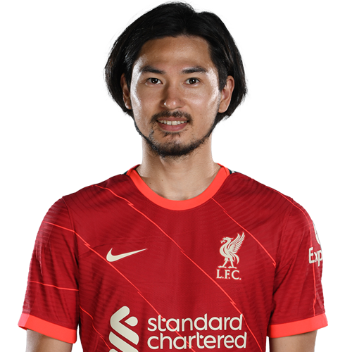
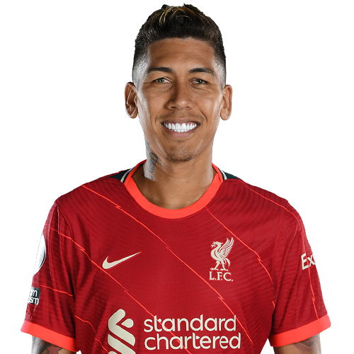

Для подробной информации - открой фотографию футболиста


Forward (Striker) - Нападающий.
Атакующий игрок, располагающийся ближе всех к воротам соперника.
Основной целью нападающих является забивание голов.